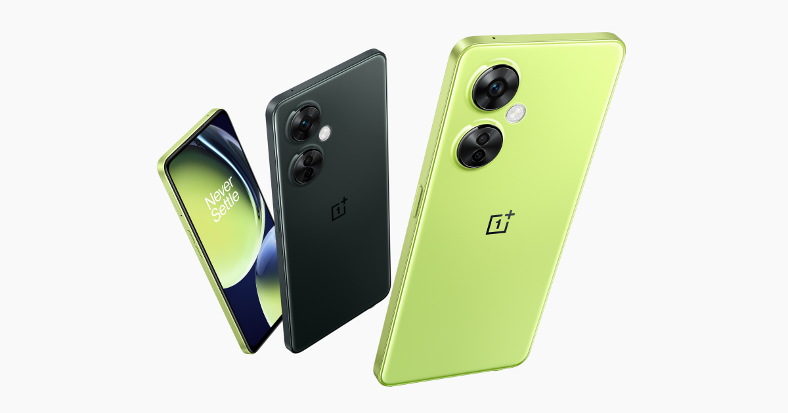

The OnePlus Nord CE 3 Lite 5G is official in India. The new mainstream 5G smartphone is one of the company's most affordable Nord-branded phones, and it is the successor to the Nord CE 2 Lite 5G (Review). The Nord CE 3 Lite 5G gets notable upgrades in some areas while some aspects have stayed the same. Thankfully for consumers, the phone's launch price is the same as the outgoing model. The big question is whether you should give the Nord CE 3 Lite 5G an affirmative nod, or look at other phones around this segment? Here is our review to help you decide.
OnePlus Nord CE 3 Lite 5G is official with a starting price of Rs. 19,999 in India. The most affordable Nord series phone in India gets a bigger 6.72-inch IPS LCD display with a 120Hz refresh rate. The screen is flat and houses a 16-megapixel front camera inside the hole-punch cutout at the top.
At the back, the Nord CE 3 Lite 5G has a 108-megapixel main camera. Its triple rear camera setup also features two 2-megapixel sensors for macro photography and depth mapping. The phone features a 5,000mAh battery with support for 67W fast charging out of the box.
There is a Qualcomm Snapdragon 695 SoC. The phone has 8GB of RAM as standard and offers 128GB/256GB of storage. There is a side-mounted fingerprint scanner along with AI face recognition.
The Nord CE 3 Lite 5G gets Android 13-based OxygenOS 13.1 out-of-the-box. It will get two major Android updates and three years of security support.